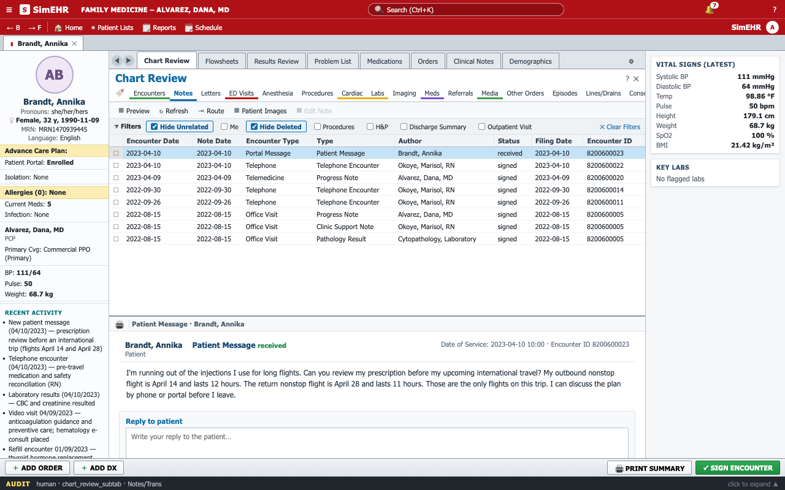
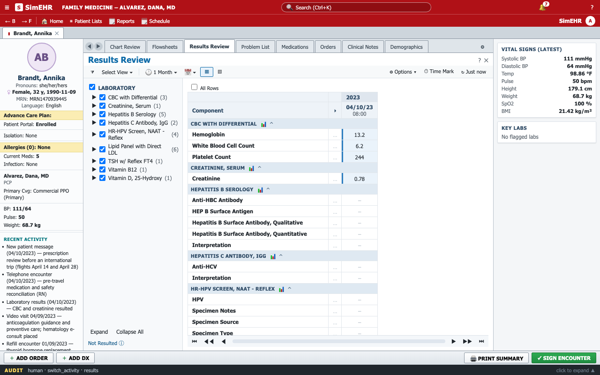
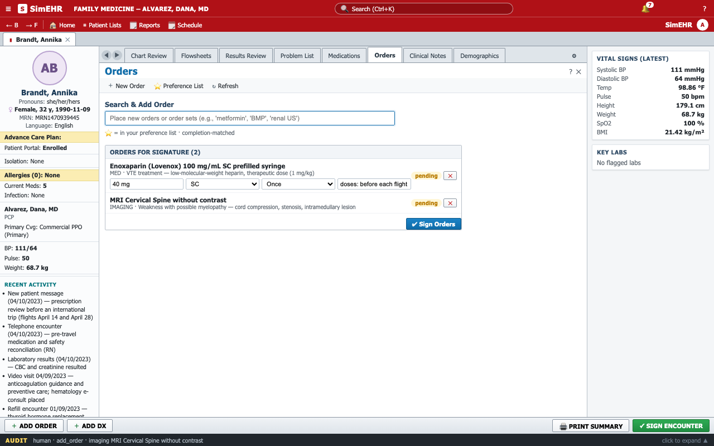
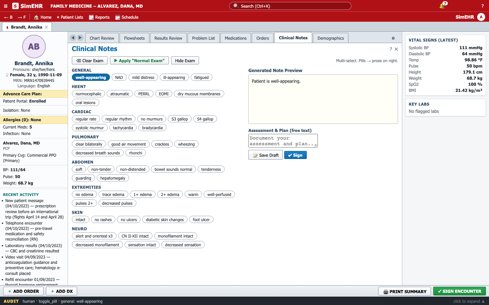

SimEHR: a high-fidelity EHR environment for computer-use agents
A highly realistic, interactive simulation of the electronic health record interfaces that physicians use every day, built so that agents can be evaluated under the conditions clinicians actually work in: familiar screens, mouse and keyboard input, and full patient charts.
TL;DR
- A realistic EHR, with chart review, results, orders, notes and patient messages, so that agents work through a clinical task end to end in the interface.
- Fully open source and easy to adapt. Runs on your own machine; load your own patient charts as plain JSON files, and change the interface and workflows as your study requires.
- Available now as a preview release, with sample data, a demo task, and two recorded agent sessions.
- Coming next: PhysicianBench-UI, a benchmark of realistic, long-horizon, physician-authored clinical workflows in this environment, and an ARISEKit module that turns your own clinical data into executable computer-use tasks.
Why the real interface matters
Benchmarks determine what gets optimized. For AI agents meant to work in medicine, one design principle matters more than any other: the agent should do the work the way a person does it, in the same software. A physician handling patient care opens the chart, reads notes, checks results, places orders, and writes notes, all through a single interface whose layout and conventions shape every step and capture the clinical decision-making.
Most existing evaluations of medical AI leave this out. Whether they pose multiple-choice questions, present case vignettes, or expose patient data through an API or SQL query, they hand the model the relevant information, already gathered and cleanly formatted, and grade the answer. What the interface demands never enters the measurement: finding the right tab, reading scanned reports, noticing a result that was never flagged, signing an order rather than leaving it as a draft. The few interface-based benchmarks rely on task-specific reconstructions or on software that looks and behaves little like a deployed EHR. And while open-source EHRs support real practice, they still differ significantly from the commercial systems that dominate hospital care.
What has been missing is a high-fidelity, interactive EHR environment: one that reflects the information layout and interactions of the systems in use, that users control completely, and that never touches a live patient record. Without it, a score obtained on clean, well-formatted input, or in a simplified interface, says little about what the same agent would do in front of a real chart a physician actually sees.
The environment
SimEHR is a web application that models the information layout and interaction patterns of common commercial EHRs. Its chart organization and navigation were refined over several rounds with practicing physicians. It covers the key surfaces of the clinical workflow:
- Chart Review, with the familiar record categories (encounters, notes, letters, labs, imaging, cardiac studies, medications, referrals, procedures, and more), each with its filter chips and a report preview.
- Results Review, a test-by-date matrix with trend graphs.
- Patient Summary, Problem List, Medications, and Demographics, plus the persistent patient sidebar with vitals, allergies, problems, and recent activity.
- Orders, with search-as-you-type and dose, route, frequency, and duration for medications.
- Clinical Notes, with a free-text assessment and plan that can be saved or signed.
- Patient messages answered from within the chart, an alerts bell, and a check that lists missing items before an encounter is signed.




Beneath the interface is a single canonical patient model. Every screen is a projection of this underlying data: the same laboratory result appears as a grouped report in Chart Review and in Results Review, and no two views can disagree. The historical record is immutable. Everything an agent episode produces (orders, notes, etc.) is held in a separate episode state, and every navigation step and clinical action is written to an audit log. Each episode starts from a clean state with the specified patient and starting screen, so evaluation is reproducible and every output is attributable to the agent that produced it.
Agents observe only screenshots of a 1280×800 viewport and act through clicks, typing, key presses, and scrolling. The harness maps each provider's native computer-use or function-calling interface onto the same browser actions, so models from different vendors run under identical conditions. The model never sees the DOM, the data files, or grading rubrics.
Three properties were design goals from the outset.
- Fully open source and locally hosted: the whole environment is published as source, runs in a browser on your own machine, resets in milliseconds, and records everything.
- Easy to adapt: a patient chart is one JSON file in a documented schema, so adding a file and registering it renders the entire chart, and labels, orderables, and workflows are ordinary application code.
- One environment with several uses: the same interface serves agent evaluation, a participant mode for clinician studies, and failure analysis, since every screenshot, action, and audit entry is retained and recorded episodes can be replayed in a newer build.
A demo task
The preview includes one task, written with a clinician collaborator. It begins the way real work begins, with a message. This is the complete task prompt:
- New messages are available for a patient. Please review and address accordingly as the physician.
- Save your documentation and send any intended patient reply.
- Sign orders you intend to issue; drafts do not count as issued orders.
- Sign or close the encounter only when appropriate, not to submit the task. An encounter awaiting patient input may remain open.
- When your EHR work is saved, stop and state any pending follow-up.
- A patient message is answered from the message itself: open it in Chart Review (Encounters or Notes) and use the reply box under it.
Two frontier agents worked through the task in the preview build, once each. Their sessions are reproduced below: every action the agent took and its reasoning at each turn, with the screens re-rendered by replaying the recorded actions in the current build. Pass and fail marks come from automated checkpoints scored by an LLM judge.
Trajectory viewer
What's next
PhysicianBench-UI builds on this environment: a benchmark of realistic, long-horizon clinical workflows, each authored and reviewed by physicians, in which an agent reads the longitudinal chart, reasons about the case, and carries out the clinical care through the interface. It will be released with the paper, together with the harness and the task set.
In parallel, we are extending ARISEKit, a toolkit for building medical AI evaluations, so that anyone with a clinical case of their own can bring it into this environment and turn it into an executable computer-use task end to end.
Try it
The environment is open source: github.com/HealthRex/SimEHR.
git clone https://github.com/HealthRex/SimEHR.git && cd SimEHR
npm install && npm run dev # http://localhost:8766The app opens on the demo chart; charts you add are reachable with ?case=<id> or from Patient Lists. The preview includes the demo chart, fully synthetic, the demo task above, the case schema (public/cases/SCHEMA.md) for bringing your own de-identified or synthetic charts, and a window.SimEHR API for loading cases and reading state and audit logs programmatically. The repository also carries the demo task files and the two recorded sessions: every screenshot, action, and reasoning step, the final chart state, and the judge's verdicts. Agents and harness adapters will ship with the benchmark release.
SimEHR is a research simulation and reproduces the workflows described above rather than the whole EHR. All patient data shown here is synthetic. The code is released under the Apache License 2.0; the synthetic charts, the demo task, the recorded sessions, and this page are released under CC BY 4.0.
Citation
If you use SimEHR in your work, please cite the preview release.
@misc{simehr2026,
title = {SimEHR: A High-Fidelity EHR Environment for Computer-Use Agents},
author = {{SimEHR Team}},
year = {2026},
howpublished = {\url{https://github.com/HealthRex/SimEHR}},
note = {Preview release}
}